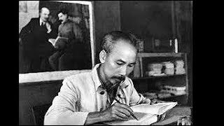
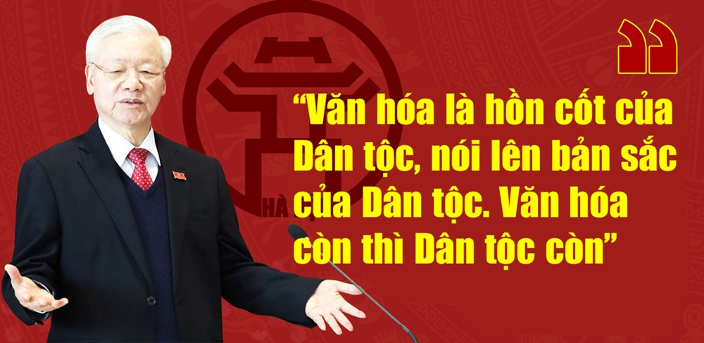

Tư tưởng Hồ Chí Minh về văn hóa
Hồ Chí Minh quan niệm văn hóa là tổng hòa của những giá trị vật chất và tinh thần do con người sáng tạo ra trong suốt chiều dài lịch sử.
Văn hóa không chỉ giới hạn ở nghệ thuật hay văn học mà bao gồm cả tư tưởng, đạo đức, lối sống, phong tục tập quán, và các giá trị tinh thần khác. Đối với Hồ Chí Minh, văn hóa là "cốt lõi của đời sống,"
là yếu tố định hình con người và xã hội.

Tư tưởng Hồ Chí Minh về đạo đức
Hồ Chí Minh coi đạo đức là yếu tố “gốc” trong sự phát triển con người và là nền tảng cho sự
thành công của cách mạng.
Người nhấn mạnh rằng: “Cũng như sông thì có nguồn mới có nước, không có nguồn thì sông cạn. Cây
phải có gốc, không có gốc thì cây héo.
Người cách mạng phải có đạo đức, không có đạo đức thì dù tài giỏi mấy cũng không lãnh đạo được
nhân dân.”
Văn hóa còn thì dân tộc còn
Hồ Chí Minh quan niệm rằng văn hóa chính là linh hồn, là bản sắc của dân tộc.
Một dân tộc tồn tại không chỉ nhờ vào lãnh thổ hay kinh tế, mà còn nhờ những giá trị văn hóa
được gìn giữ và phát triển qua các thế hệ.
Văn hóa là yếu tố định hình bản sắc dân tộc, tạo nên sự khác biệt và sức mạnh trường tồn của mỗi
quốc gia.

Văn hóa là nền tảng
Trong bối cảnh hội nhập quốc tế, Hồ Chí Minh nhấn mạnh rằng một dân tộc muốn tồn tại và
phát triển phải biết giữ gìn bản sắc văn hóa, đồng thời tiếp thu tinh hoa văn hóa nhân
loại.